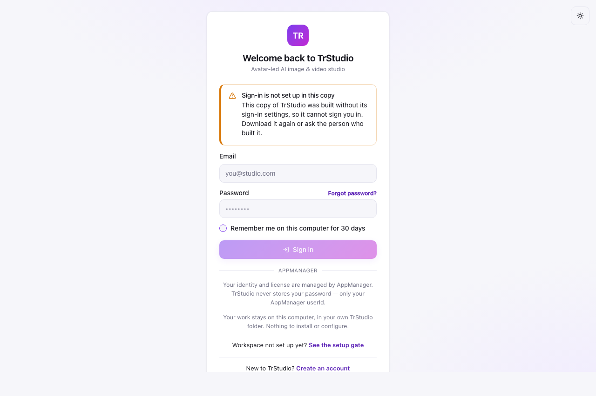
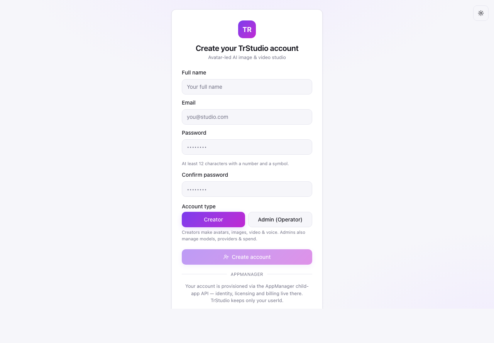
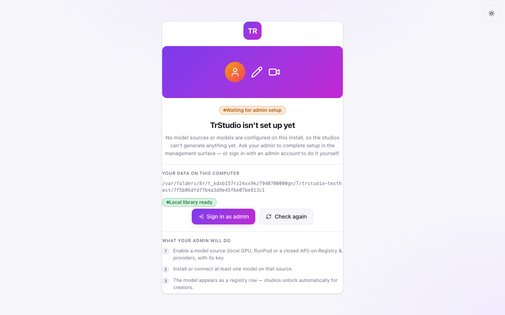
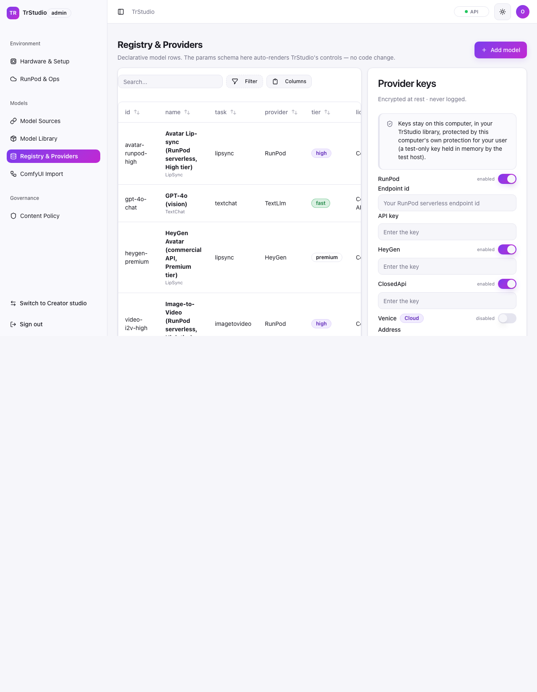
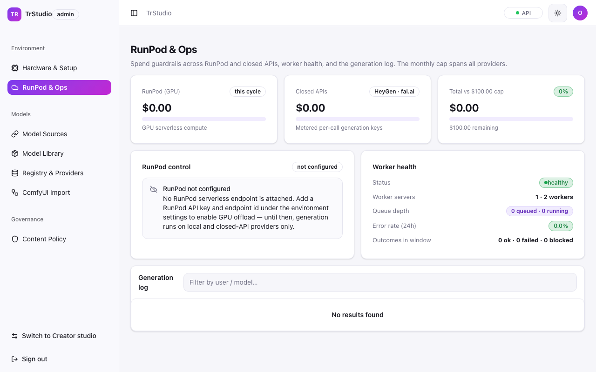

TrStudio — Developer Guide, phase 3
TrStudio-P3-DevGuide.md- Architecture cheat-sheet
- Roles and menu map
- Screen-by-screen code map
- Login (/login)
- Register (/register)
- Setup required (/setup-required)
- Admin — Model & Provider Registry (/admin/registry)
- Admin — RunPod & ops (/admin/ops)
- App frame and sign out (MainLayout, AppSidebar)
- Cross-cutting flows
- Start-up and the local store
- In-process route handler
- Sign-in with the built-in application id and key
- "Remember me"
- Sign out
- In-app job runner and recovery
- Key protection
- Zoom in the Mac app (REQ-FN-104)
- Job result and the provider of each picture (REQ-UI-086)
- Venice's own reason on a refused call (REQ-UI-095)
- Sample data for the screen checks (decision 11)
- Configuration, logging, errors
- Known issues
| App | TrStudio |
| Kind | app |
| Size | Medium |
| Phase | 3 of 3 |
| Verified on | 2026-11-15 |
| Date | 2026-11-15 |
Architecture cheat-sheet#
Phase 3 makes TrStudio one desktop app (ADR-015 to ADR-023). The screens still call /api/v1/... through the named TrStudioApi client, but its handler answers in the same process: no web server, no socket.
flowchart LR
UI["TrStudioUI pages"] --> H["InProcessEngineHandler"] --> R["TrStudio.InProcess routes"] --> Svc["TrStudio.Engine services"] --> Data["Dapper repositories"] --> DB[("TrStudio.db (SQLite)")]
| Layer | Project or folder | What lives here |
|---|---|---|
| App | src/TrStudio | MAUI Blazor Hybrid app (Mac first): MauiProgram.cs, Auth/, Engine/ (sign-in settings, key protection) |
| UI | src/TrStudioUI/Pages, Layout | All screens, unchanged in shape |
| Routes and host | src/TrStudio.InProcess | EngineHost.cs, InProcessEngineHandler.cs, Hosting/, Routes/ |
| Services | src/TrStudio.Engine/Domain | Setup gate, ops dashboard, identity |
| Data access | src/TrStudio.Engine/Infrastructure | Repositories, InAppJobRunner, AesGcmKeyStore |
| Database | src/TrStudioDb/SqliteScripts | DbUp scripts run on every start |
| Test host | tests/TrStudio.TestHost | Never shipped; same screens and engine, served headless; stand-in AppManager in FakeAppManager.cs |
Roles and menu map#
| Role | Test user | Menu items and the screen each opens |
|---|---|---|
| Anyone (signed out) | none | Login (/login), Register (/register), Setup required (/setup-required) |
| Owner | test host POST /test/session?role=Owner (tests/TrStudio.TestHost/Program.cs:72) | Creator surface, then sidebar footer switch → Registry & providers (/admin/registry), RunPod & ops (/admin/ops); Sign out in the sidebar footer |
| Operator | test host POST /test/session?role=Operator | Lands on RunPod & ops (/admin/ops); Registry & providers (/admin/registry) |
| Creator | test host POST /test/session?role=Creator | Studios only; /admin/* routes answer 403 (InProcessEngineHandler.cs:81) |
Screen-by-screen code map#
Login (/login)#

· 390 wide · sign in again notice

Renders (test host, headless) at 1280 and 390 wide, light and dark. The "Remember me" box is Login.razor:109; the plain notices are the missing-settings (:28), unreachable (:40) and kept-sign-in-ended (:52) alerts.
Call chain: Login.razor:HandleSignInAsync → POST /api/v1/auth/login (IdentityEndpoints.LoginAsync) → AppManagerClient.LoginAsync + SetupGateService.EvaluateAsync → ModelSourceRepository.ListAsync, RegistryRepository.ListAsync → ModelSource, RegistryModel
| File and line | Function | Watch | Expected value |
|---|---|---|---|
src/TrStudioUI/Pages/Auth/Login.razor:168 | OnInitializedAsync | vSettings.Configured | true in a build with appmanager.local.json; false shows the missing-settings notice |
src/TrStudioUI/Pages/Auth/Login.razor:255 | HandleSignInAsync | vRequest.RememberMe | the box's state |
src/TrStudio.InProcess/Routes/IdentityEndpoints.cs:62 | LoginAsync | aSignIn.IsConfigured | true |
src/TrStudio.Engine/Infrastructure/Identity/AppManagerClient.cs:59 | LoginAsync | vEnvelope.Data | AppManager's token pair; never print it |
src/TrStudio.InProcess/Routes/IdentityEndpoints.cs:75 | LoginAsync | vSession.Role | Owner, Operator or Creator |
src/TrStudio.Engine/Domain/SetupGate/SetupGateService.cs:42 | EvaluateAsync | vIsComplete | true once a source is enabled and a model is ready |
src/TrStudioUI/Pages/Auth/Login.razor:267 | HandleSignInAsync | ResolveLanding(vSession) | the gate's landing, else /admin/ops or /avatar |
Calculations on this screen: IsEmailValid (Login.razor:228) checks for an @ and a later dot; ResolveLanding (:296).
Kept sign-in resume after the first live render#
| File and line | Function | Watch | Expected value |
|---|---|---|---|
src/TrStudioUI/Pages/Auth/Login.razor:187 | OnAfterRenderAsync | aFirstRender | true; a pre-render pass returns without calling resume |
src/TrStudioUI/Pages/Auth/Login.razor:195 | OnAfterRenderAsync | vResume.StatusCode | 204 nothing kept, 200 resumed, 401 ended, 503 unreachable |
src/TrStudio.InProcess/Routes/IdentityEndpoints.cs:194 | ResumeAsync | vKept.KeptUntil | 30 days after the ticked sign-in |
src/TrStudio.InProcess/Routes/IdentityEndpoints.cs:208 | ResumeAsync | vRenewed | a renewed session; refused goes to :230 and forgets the file |
src/TrStudioUI/Pages/Auth/Login.razor:211 | OnAfterRenderAsync | objKeptEnded | the plain "Please sign in again" words |
Register (/register)#

· 390 wide
Renders (test host, headless) at 1280 and 390 wide, light and dark. Some of its mockup's control names are missing (owner decision 11, a dedicated run). Register has no "Remember me" box: a new account keeps nothing.
Call chain: Register.razor:HandleCreateAsync → POST /api/v1/auth/register (IdentityEndpoints.RegisterAsync) → AppManagerClient.RegisterAsync + SetupGateService.EvaluateAsync → ModelSourceRepository.ListAsync, RegistryRepository.ListAsync → ModelSource, RegistryModel
| File and line | Function | Watch | Expected value |
|---|---|---|---|
src/TrStudioUI/Pages/Auth/Register.razor:179 | HandleCreateAsync | vRequest.AccountType | Creator, or AdminOperator when the admin box is ticked |
src/TrStudio.InProcess/Routes/IdentityEndpoints.cs:117 | RegisterAsync | aSignIn.IsConfigured | true; false answers 503 SIGN_IN_NOT_CONFIGURED |
src/TrStudio.Engine/Infrastructure/Identity/AppManagerClient.cs:84 | RegisterAsync | vEnvelope.Data | the new account's session |
src/TrStudio.InProcess/Hosting/LocalSessionStore.cs:37 | SignIn | objSessions.Count | one more than before |
src/TrStudioUI/Pages/Auth/Register.razor:224 | ReadErrorAsync | vProblem.Title | EMAIL_EXISTS for a used email |
src/TrStudioUI/Pages/Auth/Register.razor:192 | HandleCreateAsync | ResolveLanding(vSession) | the gate's landing, else /admin/setup/hardware or /avatar |
Calculations on this screen: IsPasswordValid (Register.razor:151): at least 12 characters with a digit and a symbol.
Setup required (/setup-required)#

· 390 wide
Renders (test host, headless) at 1280 and 390 wide, light and dark. Phase 3 adds the "Your data on this computer" card: the data folder, or why the local store is not ready.
Call chain: SetupRequired.razor:OnInitializedAsync → GET /api/v1/local-store (DesktopSessionEndpoints) → EngineHost.StartupProblem → SqliteDatabaseMigrator.MigrateDatabase; CheckAgainAsync → GET /api/v1/setup-gate (IdentityEndpoints.GetSetupGateAsync) → SetupGateService.EvaluateAsync → ModelSource, RegistryModel
| File and line | Function | Watch | Expected value |
|---|---|---|---|
src/TrStudio.InProcess/EngineHost.cs:176 | StartAsync | AppliedScripts | new script names on a first start, empty after |
src/TrStudio.InProcess/EngineHost.cs:180 | StartAsync | StartupProblem | null when the store is ready; the folder and reason when not |
src/TrStudio.InProcess/InProcessEngineHandler.cs:45 | AnswerAsync | vProblem | null; otherwise every route answers 503 LOCAL_STORE_UNAVAILABLE |
src/TrStudio.InProcess/Routes/DesktopSessionEndpoints.cs:65 | MapDesktopSessionEndpoints | dataFolder | the user's app data folder plus TrStudio |
src/TrStudioUI/Pages/Auth/SetupRequired.razor:113 | OnInitializedAsync | objDataFolder | the same folder; objStoreProblem (:118) null |
src/TrStudioUI/Pages/Auth/SetupRequired.razor:144 | CheckAgainAsync | vResponse.StatusCode | 200 when signed in, 401 when not |
src/TrStudio.Engine/Domain/SetupGate/SetupGateService.cs:49 | EvaluateAsync | RedirectPath | the role's landing for a complete or incomplete setup |
Calculations on this screen: none.
Admin — Model & Provider Registry (/admin/registry)#

· 390 wide
Renders (test host, headless) at 1280 and 390 wide, light and dark, signed in as Owner. Some mockup control names are missing (decision 11). Phase 3 adds the keys note (AdminRegistry.razor:90) and always lists RunPod, HeyGen and ClosedApi (:525).
Call chain: AdminRegistry.razor:SaveKeysAsync → PUT /api/v1/admin/providers/keys (RegistryEndpoints.UpsertProviderKeyAsync) → AesGcmKeyStore.StoreAsync, DesktopProviderSettings.RefreshAsync → ProviderKeyRepository.UpsertAsync → ProviderKey
| File and line | Function | Watch | Expected value |
|---|---|---|---|
src/TrStudioUI/Pages/Admin/AdminRegistry.razor:503 | TryLoadRegistryAsync | vKeys.StatusCode | 200 for Owner or Operator |
src/TrStudioUI/Pages/Admin/AdminRegistry.razor:537 | TryLoadRegistryAsync | objKeyNote | "Keys stay on this computer … (the macOS Keychain)." |
src/TrStudio.InProcess/Routes/DesktopProviderEndpoints.cs:24 | MapDesktopProviderEndpoints | aProtector.Description | the macOS Keychain on Mac; the test host's in-memory key on the test host |
src/TrStudioUI/Pages/Admin/AdminRegistry.razor:789 | SaveKeysAsync | vKey.ProviderName | the row being saved; check vKey.Value is non-empty, never print it |
src/TrStudio.InProcess/Routes/RegistryEndpoints.cs:182 | UpsertProviderKeyAsync | aRequest.ProviderName | the same name |
src/TrStudio.Engine/Infrastructure/Security/AesGcmKeyStore.cs:146 | DeriveKey | objKeyProtector | not null, so no configuration key is read |
src/TrStudio.Engine/Infrastructure/Data/ProviderKeyRepository.cs:39 | UpsertAsync | aIsEnabled | the row's switch |
src/TrStudio.Engine/Infrastructure/Security/DesktopProviderSettings.cs:84 | RefreshAsync | objRunPod.ApiKey.Length | above zero after a RunPod key is saved |
Calculations on this screen: AesGcmKeyStore.Mask (AesGcmKeyStore.cs:97) shows the last four characters only.
Admin — RunPod & ops (/admin/ops)#

· 390 wide
Renders (test host, headless) at 1280 and 390 wide, light and dark, signed in as Owner. Some mockup control names are missing (decision 11). Phase 3 reads queue depth from the local database instead of Hangfire.
Call chain: AdminOps.razor:LoadAsync → GET /api/v1/admin/ops (Phase9Endpoints.GetOpsDashboardAsync) → OpsDashboardService.GetDashboardAsync → LocalJobQueueMonitor.GetSnapshot → JobQueueStore.CountQueuedAndRunning → GenerationJob
| File and line | Function | Watch | Expected value |
|---|---|---|---|
src/TrStudioUI/Pages/Admin/AdminOps.razor:324 | LoadAsync | vOps.StatusCode | 200 for Owner or Operator; 403 for Creator |
src/TrStudio.InProcess/InProcessEngineHandler.cs:78 | AnswerAsync | vResult.Succeeded | true for the admin policy |
src/TrStudio.Engine/Domain/Ops/OpsDashboardService.cs:44 | GetDashboardAsync | vSnapshot.Servers.Count | 1 once the runner started, else 0 |
src/TrStudio.Engine/Infrastructure/Ops/LocalJobQueueMonitor.cs:37 | GetSnapshot | vQueued, vRunning | the GenerationJob counts |
src/TrStudio.Engine/Infrastructure/Jobs/JobQueueStore.cs:108 | CountQueuedAndRunning | vCounts | Queued plus Pending, and Running |
src/TrStudio.Engine/Domain/Ops/OpsDashboardService.cs:66 | GetDashboardAsync | TotalEnqueued | the same queued count |
src/TrStudioUI/Pages/Admin/AdminOps.razor:326 | LoadAsync | objOps.Queue.TotalEnqueued | the number in the "Queue depth" badge (:199) |
Calculations on this screen: TotalEnqueued and TotalProcessing (OpsDashboardService.cs:66) sum the per-queue counts; healthy means a heartbeat within 60 seconds (:60).
App frame and sign out (MainLayout, AppSidebar)#
· 390 wide
Renders (test host, headless) around every signed-in screen, at 1280 and 390 wide, light and dark. Sign out is in the sidebar footer (AppSidebar.razor:66) and on the user chip (MainLayout.razor:45).
Call chain: AppSidebar.razor:SignOutAsync → POST /api/v1/auth/logout (DesktopSessionEndpoints) → RememberedSignInStore.Forget, LocalSessionStore.SignOut → remembered-sign-in.bin removed
| File and line | Function | Watch | Expected value |
|---|---|---|---|
src/TrStudioUI/Layout/MainLayout.razor:106 | OnAfterRenderAsync | vState.UserId | the AppManager user id; null redirects to /login (:149) |
src/TrStudioUI/Layout/AppSidebar.razor:119 | SignOutAsync | the logout response | 204 |
src/TrStudio.InProcess/Routes/DesktopSessionEndpoints.cs:52 | MapDesktopSessionEndpoints | aRemembered.HasKept | false after this line |
src/TrStudio.InProcess/Hosting/LocalSessionStore.cs:43 | SignOut | return value | true |
src/TrStudio/Auth/MauiAuthSession.cs:58 | ClearAsync | objState | null after :60 |
src/TrStudio.InProcess/InProcessEngineHandler.cs:67 | AnswerAsync | vUser.Identity.IsAuthenticated | false on the next protected call, which answers 401 |
Calculations on this screen: the user chip initial (MainLayout.razor:115) is the email's first letter.
Cross-cutting flows#
Only the flows phase 3 changed are here. For the rest (the role-gated shell, the creator studios, provider routing) see docs/devguides/TrStudio-DevGuide.md.
Start-up and the local store#
Call chain: MauiProgram.CreateMauiApp → EngineHost.Create → EngineHost.StartAsync → SqliteDatabaseMigrator.MigrateDatabase → TrStudio.db
| File and line | Function | Watch | Expected value |
|---|---|---|---|
src/TrStudio/MauiProgram.cs:48 | CreateMauiApp | vDataFolder | app data folder plus TrStudio |
src/TrStudio.InProcess/EngineHost.cs:77 | Create | vDatabasePath | the data folder plus TrStudio.db |
src/TrStudio.InProcess/EngineHost.cs:159 | Create | vRoutes | every route mapped by RouteMap.MapAll |
src/TrStudio.InProcess/EngineHost.cs:176 | StartAsync | AppliedScripts | new scripts only |
src/TrStudio.InProcess/EngineHost.cs:185 | StartAsync | provider settings | loaded from ProviderKey |
In-process route handler#
Call chain: named TrStudioApi client (MauiProgram.cs:67) → MauiAuthTokenHandler.SendAsync → InProcessEngineHandler.AnswerAsync → RouteTable.Find → RouteInvoker.InvokeAsync
| File and line | Function | Watch | Expected value |
|---|---|---|---|
src/TrStudio/Auth/MauiAuthTokenHandler.cs:36 | SendAsync | aRequest.Headers.Authorization.Scheme | Bearer when signed in |
src/TrStudio.InProcess/InProcessEngineHandler.cs:50 | AnswerAsync | vRoute.Template | the route asked for; null answers 404 or 405 |
src/TrStudio.InProcess/InProcessEngineHandler.cs:64 | AnswerAsync | vUser | the signed-in user's claims |
src/TrStudio.InProcess/InProcessEngineHandler.cs:103 | AnswerAsync | vResult | the route's result; an exception answers 500 ENGINE_ERROR (:123) |
src/TrStudio.InProcess/Hosting/RouteTable.cs:260 | Find | aPathExists | true for a known path |
Sign-in with the built-in application id and key#
Call chain: AppManagerBuildSettings.Load → EngineHost.Create → IdentityModule client headers → AppManagerClient.LoginAsync
| File and line | Function | Watch | Expected value |
|---|---|---|---|
src/TrStudio/Engine/AppManagerBuildSettings.cs:27 | Load | IsConfigured of the result | true when appmanager.local.json was embedded |
src/TrStudio.InProcess/EngineHostOptions.cs:18 | IsConfigured | ApplicationId | above zero, with an address and a key |
src/TrStudio.InProcess/EngineHost.cs:96 | Create | vApplicationId | the build's id |
src/TrStudio.Engine/DependencyInjection/IdentityModule.cs:49 | AddIdentityModule | header names | X-Api-Key present; never print its value |
src/TrStudio.Engine/Infrastructure/Identity/AppManagerClient.cs:57 | LoginAsync | vBody keys | email, encryptedPassword, applicationId |
"Remember me"#
Call chain: Login.razor:HandleSignInAsync → IdentityEndpoints.LoginAsync → RememberedSignInStore.Remember → remembered-sign-in.bin; on open Login.razor:OnAfterRenderAsync → IdentityEndpoints.ResumeAsync → AppManagerClient.RefreshAsync
| File and line | Function | Watch | Expected value |
|---|---|---|---|
src/TrStudio.InProcess/Routes/IdentityEndpoints.cs:79 | LoginAsync | aRequest.RememberMe | true keeps, false forgets (:85) |
src/TrStudio.InProcess/Hosting/RememberedSignInStore.cs:53 | Remember | KeptUntil | now plus 30 days |
src/TrStudio.InProcess/Hosting/RememberedSignInStore.cs:118 | Write | file bytes | AES-GCM ciphertext, not readable text |
src/TrStudio.InProcess/Routes/IdentityEndpoints.cs:200 | ResumeAsync | HasEnded(vKept) | false within 30 days |
src/TrStudio.InProcess/Routes/IdentityEndpoints.cs:210 | ResumeAsync | vRenewed.RefreshToken | replaced in the file, end date kept |
On the test host, /test/sign-in-mode?mode=fake sends AppManager calls to FakeAppManager.AnswerAsync (tests/TrStudio.TestHost/FakeAppManager.cs:36).
Sign out#
See the app frame entry: DesktopSessionEndpoints.cs:49 ends the session and always removes the kept sign-in; MauiAuthSession.ClearAsync (MauiAuthSession.cs:51) does the same in the app.
In-app job runner and recovery#
Call chain: EngineHost.StartWorkersAsync → InAppJobRunner.RecoverAsync → JobQueueStore.ListUnfinishedAsync, FailClosedMidJobAsync → GenerationJob
| File and line | Function | Watch | Expected value |
|---|---|---|---|
src/TrStudio.InProcess/EngineHost.cs:207 | StartWorkersAsync | vRecovered | queued, resumed and failed counts |
src/TrStudio.Engine/Infrastructure/Jobs/InAppJobRunner.cs:110 | RecoverAsync | vTicket.State | Queued rows run again |
src/TrStudio.Engine/Infrastructure/Jobs/InAppJobRunner.cs:117 | RecoverAsync | vTicket.ProviderRef | set for a resumable Venice clip |
src/TrStudio.Engine/Infrastructure/Jobs/InAppJobRunner.cs:124 | RecoverAsync | vTicket.JobId | a Running row that cannot resume, failed as closed mid-job |
src/TrStudio.Engine/Infrastructure/Jobs/InAppJobRunner.cs:86 | Start | StartedUtc | set once |
Key protection#
Call chain: AesGcmKeyStore.DeriveKey → IKeyProtector.GetOrCreateDataKey → SecureStorageKeyProtector → Keychain (Mac) or DPAPI (Windows)
| File and line | Function | Watch | Expected value |
|---|---|---|---|
src/TrStudio/MauiProgram.cs:57 | CreateMauiApp | KeyProtector | a SecureStorageKeyProtector |
src/TrStudio/Engine/SecureStorageKeyProtector.cs:36 | GetOrCreateDataKey | vStored | empty only on the first run; never print it |
src/TrStudio/Engine/SecureStorageKeyProtector.cs:42 | GetOrCreateDataKey | vKey.Length | 32 |
src/TrStudio.InProcess/Hosting/RememberedSignInStore.cs:128 | Encrypt | the protector | the same key as the provider keys |
The test host uses TestKeyProtector (tests/TrStudio.TestHost/TestKeyProtector.cs:19), an in-memory key.
Zoom in the Mac app (REQ-FN-104)#
Call chain: MainPage BlazorWebViewInitialized → BlazorZoom.Attach → WKUserScript at document start + BlazorZoom.Apply → CSS zoom and --tr-zoom on <html>
| File and line | Function | Watch | Expected value |
|---|---|---|---|
src/TrStudio/BlazorZoom.cs:64 | Attach | the user script text | the saved level (tf.zoom, default 1.6 on a 4K panel) |
src/TrStudio/BlazorZoom.cs:122 | Apply | Level | 0.5 to 3.0 in 0.1 steps |
src/TrStudio/BlazorZoom.cs:131 | Apply | PageZoom | always 1: WKWebView.PageZoom magnifies without laying the page out again, which put the Login card right of centre |
src/TrStudio/BlazorZoom.cs:140 | ApplyScript | --tr-zoom | equal to zoom; .auth-shell divides 100vh by it |
Job result and the provider of each picture (REQ-UI-086)#
GET /api/v1/jobs/{id}/result (src/TrStudio.InProcess/Routes/SpineEndpoints.cs:175) adds the run details from the generation log through WorkspaceEndpoints.WithRunInfoAsync, as the gallery and history calls do; Image studio badges a tile "Venice" from AssetResponse.ProviderKind.
Venice's own reason on a refused call (REQ-UI-095)#
VeniceApiException.FromResponse keeps Venice's details on a 400 word for word (src/TrStudio.Engine/Domain/Venice/VeniceApiException.cs:98) and reads a rate-limit reset given in seconds, as a Unix time in seconds, or in milliseconds (:152), never below zero.
Sample data for the screen checks (decision 11)#
Each screen's mockup data is put into the test host by tests/verify/seed/<mockup name>.sh, which calls a TEST ONLY POST /test/seed/<mockup name> in tests/TrStudio.TestHost/Program.cs (18 endpoints from line 120) for the stand-in AppManager's user 4242. tf-verify-list.sh finds each script and tf-verify-screens.sh runs it before the screen. Never shipped.
Configuration, logging, errors#
- Configuration:
DesktopSettings.Load(src/TrStudio/MauiProgram.cs:44); engine settings in memory (EngineHost.cs:78). No environment variables. - Logging: daily files under the data folder's
logs(MauiProgram.cs:110); no key is logged. - Errors: 503
LOCAL_STORE_UNAVAILABLE(InProcessEngineHandler.cs:47), 400INVALID_REQUEST(:114), 500ENGINE_ERROR(:123).
Known issues#
- Login, Register and Setup required still differ from their mockups in the structure comparison (a link box on Login, the chosen account-type colour on Register, a badge colour, an icon and a border on Setup required): REQ-UI-001, REQ-UI-002, REQ-UI-004, REQ-FN-015 and REQ-FN-016 are red on the mockup check only.
- The real Mac app cannot be driven by the framework's checker until Automation Mode is allowed without a password (
sudo automationmodetool enable-automationmode-without-authentication, owner only). On 15 Nov 2026 it was checked by screenshots instead. - AppManager does not document a refresh token's lifetime, so 30 days is the app's own limit (
docs/TrStudio-AppManager-Feedback.md, AM-001). - ComfyUI import: Run falls back to made-up per-node results when the debug route cannot be reached (
src/TrStudioUI/Pages/Admin/AdminComfy.razor). - Libraries: TrBlazeUI 2.2.5 and TechieRag 1.1.5 from nuget.org (15 Nov 2026); open TechieRag entries TR-RAG-002 to TR-RAG-006, none blocking.